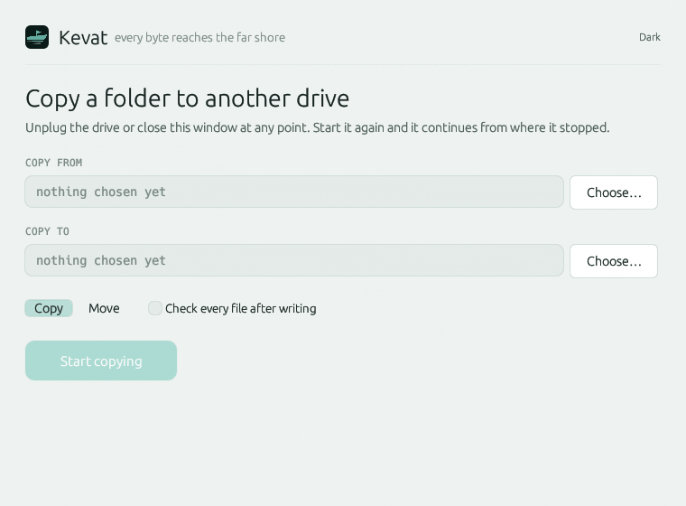

Kevat copies and moves large folders — or a single big file — to external drives, survives being unplugged mid-transfer,
and picks up again from the last proven checkpoint. One small native binary. No network, ever.
Real installers, one per platform: an MSI that lands in the Start Menu, a DMG you drag to
Applications, an AppImage that is a single runnable file. Inside each is the same application,
about 5.5 MB unpacked — run it plain and it opens a window, give it two paths and it stays
a command-line tool. No runtime to fetch, no service left running afterwards. Archives and a
terminal install script are below for those who prefer them.
Your system
Linux
x86_64 · AppImage
One file, about 3.4 MB: make it executable and run it. Needs FUSE — or
run it with --appimage-extract-and-run — and an X11 or Wayland desktop.
Also as an archive:
.tar.gz
· static CLI for servers below
Your system
macOS
Apple Silicon · DMG
Open it and drag Kevat.app to Applications. Unsigned and not
notarized — Gatekeeper will object to the first launch; the two-line fix is below.
Honesty note: this DMG is assembled by CI and has never been executed by anyone.
Start Menu shortcut with no console flash, kevat on your PATH,
and a real uninstaller in Apps & Features. Unsigned — SmartScreen will object once:
More info → Run anyway.
Honesty note: this MSI is assembled by CI and has never been executed by anyone.
Running a server or a container? There is a separate
command-line-only build for that: statically linked against musl, about 0.7 MB, no glibc
version to satisfy, no desktop and no FUSE needed — one file that runs on any distribution.
Get it with KEVAT_VARIANT=cli on the install script, or directly:
x86_64 ·
ARM64.
Prefer the terminal? Linux & macOS — bash, zsh, sh
curl -fsSL https://kevat.app/install.sh | sh
Windows — PowerShell
irm https://kevat.app/install.ps1 | iex
Both scripts pick the archive build for your machine, check it against the release
SHA256SUMS before installing, and refuse to continue if it does not match — and
they wire up the same menu entry, Kevat.app or Start Menu shortcut the installers
create.
Check what you downloaded
Every release ships a SHA256SUMS file covering every asset — installers
included. Compare before you trust it.
sha256sum -c SHA256SUMS --ignore-missing
First run on Windows
The MSI is unsigned, so SmartScreen interposes once. Click More info,
then Run anyway — after the checksum above, not instead of it.
Gatekeeper quarantines browser downloads. Right-click Kevat.app → Open — or,
on newer macOS where that path is gone, System Settings → Privacy & Security →
Open Anyway, or clear the flag directly:
Copy a folder. Interrupt it however you like; the same command resumes it.
kevat ~/Photos /media/backup/Photos
The problem
Your drive is faster than your file manager.
Copying a big folder to an external disk is worse than the hardware deserves, for three reasons
that have nothing to do with the drive.
Single-threaded, small buffers
File managers copy one stream at a time, and Windows disables write caching on removable
drives. Everything crawls through the USB bridge.
Small files pay a toll each
Thousands of files mean thousands of open and close calls — and on Windows, a synchronous
malware scan per file. The drive idles while the queue drains.
An interruption costs everything
Three hours in, the cable catches. There is no record of what finished and no way to continue
a half-written 80 GB file. You start again.
How it works
It writes down what it has proven, and never trusts it blind.
A journal kept off the drive
Finished files, their hashes, and periodic checkpoints for the file in flight are recorded in
the system configuration directory — never on the destination drive. The only
thing Kevat leaves on your external disk is the file it is part-way through writing, named
.kpart until its bytes are proven and it is renamed into place.
On resume, a checkpoint is re-hashed against what is actually on the disk before a
single byte is reused, because a drive yanked mid-write corrupts the tail and a checkpoint by
itself proves nothing. Copying never modifies the original: the worst case after an interruption
is re-copying the file that was in flight, and nothing already written is lost.
Verify, then move
Every file is hashed with xxh3 as it is read. With --verify — on by default for
a move — the destination is read back and the two hashes compared before the file is accepted.
In move mode the original is deleted only after its copy is verified and that
fact is durable on disk, in that order, so a file is never in neither place.
Kevat refuses a move that would consume itself: a source and destination that resolve to the
same folder, through a symlink, a second mount point or any other alias, are turned away before
a byte moves.
One reader, one writer, a bounded channel
A reader thread streams and hashes the source; a writer thread lands it on the destination;
a bounded queue between them is the backpressure. It is the shape a rotational USB disk wants,
and it keeps memory flat no matter how large the files are.
The moment it exists for
Pull the drive out. Nothing is lost.
Everything already proven is already recorded.
Pull the cable and the run ends — but nothing that finished is forgotten. Every completed file
and every 64 MB checkpoint is durable in the journal before the run stops, and the journal does
not live on the drive that just left. Reconnect, run the same command, and it continues from the
last checkpoint it can prove against the disk.
Reconnect and run the same command; it continues from the last checkpoint. The test suite proves
this the hard way — it kills the process at random points, over and over, across a mixed tree of
thousands of small files and multi-gigabyte ones, resumes each time, and checks the result is
byte-for-byte identical to the source.
Using it
Pick what to copy, and where. Then a button.
One binary, two front ends: run it with no arguments and it opens a window, give it two paths and
it stays a command-line tool. Resume is automatic in both — never a flag you have to remember.

A real 1.9 GB transfer of 242 files, recorded from the running application — not a mockup.
Choose a folder, a file, or several
The source can be a whole folder, a single file, or any set of items you pick with
Ctrl-click and Shift-click; double-click opens a folder, as anywhere else. The destination is
the folder it all goes into. The picker is built into the window, not borrowed from the
desktop, so there is no portal layer between Kevat and the drive you picked. Nothing starts
until both are set.
What it leaves alone
Symbolic links are skipped and listed at the end. Modification times are kept;
permissions and ownership are not. Files already on the drive that are not in the source
are never deleted — and files that exist in both and differ are counted for you before
anything is replaced, so an overwrite is never a surprise.
Watch it work
Speed and total update ten times a second, in monospace so the digits do not jitter as they
change. The bar tracks bytes, not files, so a single large file still moves it.
Stop whenever
Stopping is the same event as an unplug, which is why it is safe. It finishes the file it is
on, leaves a clean journal, and the same two folders continue from there.
Chunk sizes and checksums are never mentioned in the window, because nobody copying holiday photos
should have to meet them. Two folders, a button, and a bar that moves.
kevat SRC DEST [--move] [--verify] [--no-verify] [--paranoid] [--dry-run]
It renders entirely on the CPU — no OpenGL, no GPU driver — which is why one small binary carries
the whole interface. The application build is about 5.5 MB; the command-line-only build is
0.7 MB.
Platforms
Linux, macOS and Windows.
Platform
Build
Linux x86_64 · ARM64
application (window + CLI), plus a static musl CLI-only build
macOS Apple silicon
application (window + CLI)
Windows x86_64
application (window + CLI)
The application builds are dynamically linked and need a desktop session — glibc plus X11 or
Wayland on Linux. The static musl -cli build has no such requirement: no glibc
version to satisfy, no desktop, no FUSE — one file for servers and containers.
Runs on Linux and Windows — the application has been launched and used on both. The
macOS build is compiled and packaged by CI but has not been run by anyone, and neither has the
MSI or the DMG installer. The full kill-resume test suite is run on x86_64 Linux; the ARM
builds are published but have not been exercised yet. If a checksum matches and a binary
misbehaves, an issue on GitHub is welcome.
Flatpak and Snap are excluded on purpose. Their sandboxes route the destination
through a portal that hides the volume and device details Kevat relies on — inside one, a USB
drive looks like a network mount and resume can no longer tie the journal to it.
Privacy
There is no network code in the binary.
Not an update checker, not telemetry, not an HTTP client sitting unused — none of it is compiled
in. You can verify that by reading the source or by watching the traffic, which is the only kind
of privacy claim worth making. Updates come from your operating system's package manager, so you
decide when the code on your machine changes.
Nothing is written to your destination drive except the files you asked for.